Кастильская сая со шнуровкой
outfit:castile_laced_saya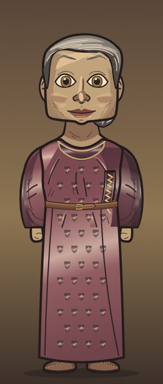
32 × 32
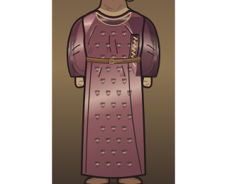
До и после
Женская основа по сае Леонор Кастильской из Лас-Уэльгас. Существующая геометрия шнуровки адаптирована к длинному женскому подолу.
Королевское пельоте
outfit:castile_royal_pellote 32 × 32
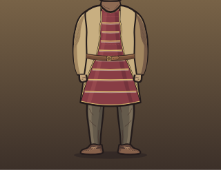
До и после
Одеяние ученика из «Макам»
outfit:iraq_school_robe 32 × 32
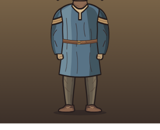
До и после
Сцена 1236–1237 годов показывает учителя, а каталог не устанавливает особый крой одежды ученика.
Каригину
outfit:kariginu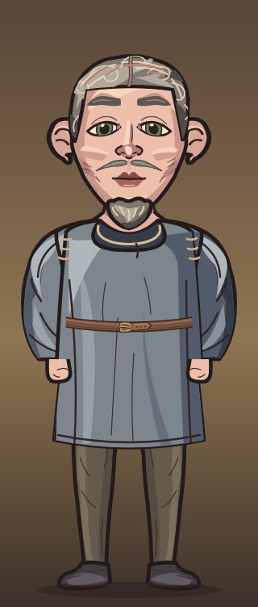
32 × 32
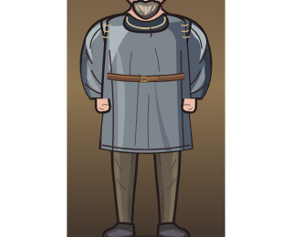
Музей датирует скульптуру XIII–XIV веками, поэтому она может быть позднее целевого периода 1200–1250 годов.
Кастильское пельоте
outfit:pellote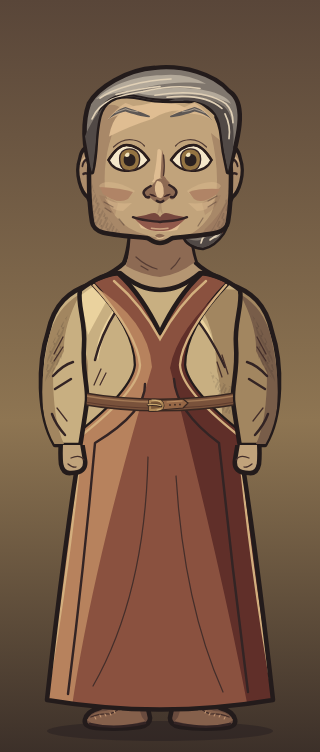
32 × 32
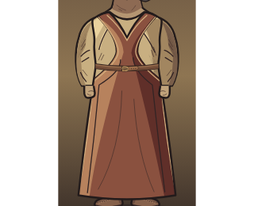
Сунская куртка с запахом
outfit:song_child_jacket 32 × 32
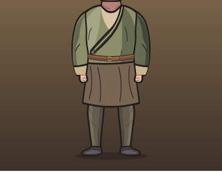
До и после
Картина 1212 года показывает детей эпохи Сун, но источник не выделяет куртку с запахом и не подтверждает её точный крой.
Сунское платье с вышитыми фазанами
outfit:song_pheasant_robe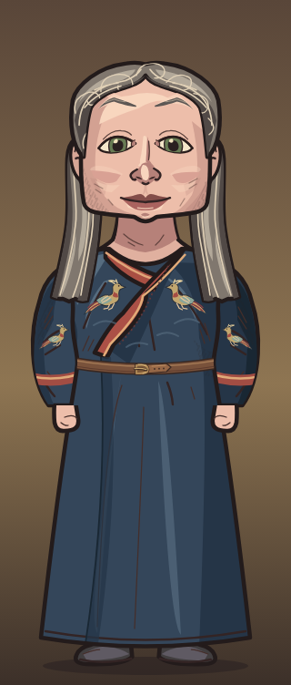
32 × 32
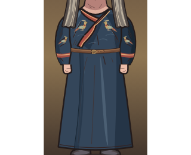
Каталог музея не датирует создание портрета, поэтому он служит примером сунского придворного одеяния, а не точно датированной вещью.
Сунская одежда с запахом
outfit:song_plain_jacket 32 × 32
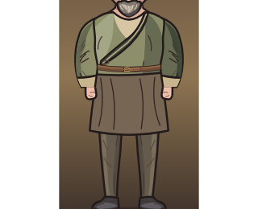
Картина датирована 1212 годом, но не определяет, какой из показанных фасонов является именно простой курткой с запахом.
Парадное одеяние Южной Сун
outfit:song_round_robe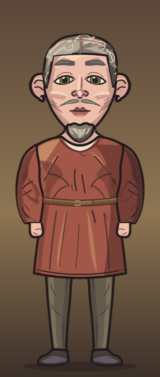
32 × 32
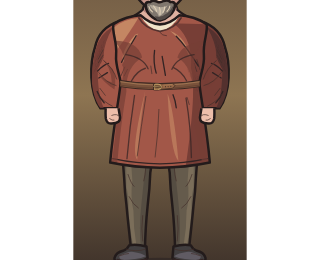
Карточка музея не указывает дату создания портрета, поэтому это сравнительный образец сунского императорского костюма.
Танский жакет с высокой юбкой
outfit:tang_jacket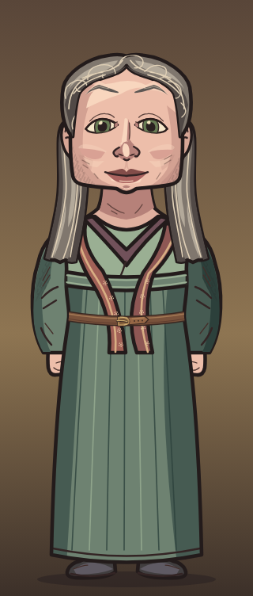
32 × 32
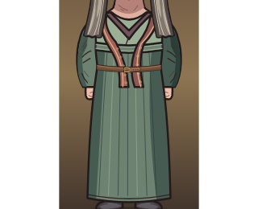
Фигурка датирована около 700–750 гг., намного раньше периода 1200–1250.
Бандиагара · хлопковая туника
outfit:tellem_tunic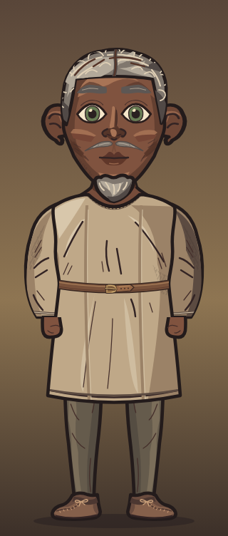
32 × 32
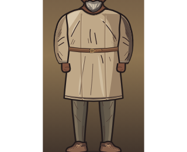
—
Бандиагара · одежда из обёрнутой ткани
outfit:tellem_wrap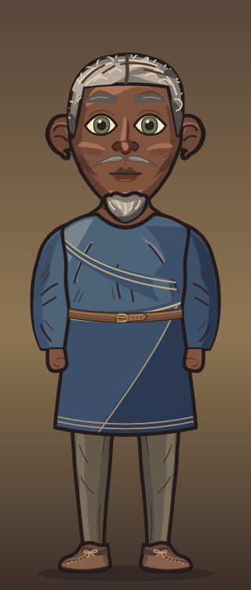
32 × 32
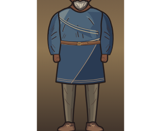
Это погребальное покрывало XV века, а не одежда, которую можно уверенно датировать периодом 1200–1250.
Одеяние с нарукавными полосами
outfit:tiraz_robe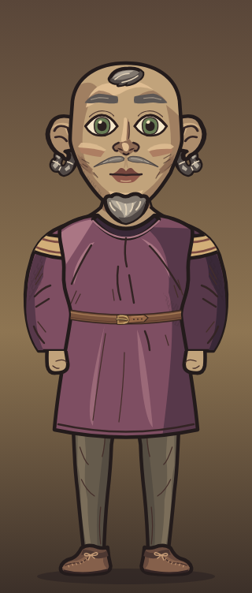
32 × 32
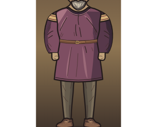
—